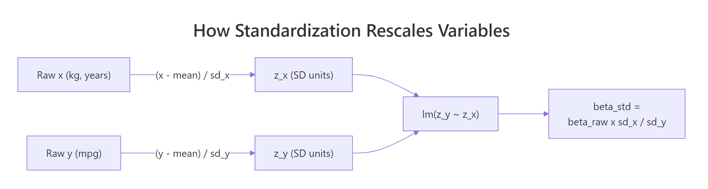
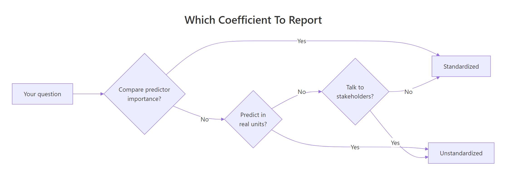

Standardized vs Unstandardized Coefficients in R: When Each Matters
An unstandardized regression coefficient tells you how the response changes when a predictor moves by one raw unit (kg, dollars, years). A standardized coefficient tells the same story after every variable is rescaled to standard-deviation units, so predictors measured on different scales become directly comparable.
What's the difference between standardized and unstandardized coefficients?
A single lm() call on mtcars can tell two very different stories depending on whether we rescale the inputs. We fit the same model twice, once on raw data and once on standardized data, and watch the coefficients transform from "mpg per pound of weight" into "mpg-in-SD-units per weight-in-SD-units." Same data, same relationships, different units of interpretation.
The raw model says each additional 1000 lb of weight lowers mpg by 3.88 units, and each additional horsepower lowers it by 0.032 units. Read literally, weight looks roughly 120 times more "important" than horsepower, which is a trick of the scale (weight is measured in thousands of pounds, horsepower in single units). The standardized model rescales both predictors to the same yardstick (one standard deviation), and the coefficients become -0.63 for weight and -0.36 for hp. Weight is still the stronger predictor, but only by a factor of about 1.75, not 120.
0.032 looks negligible, but if the predictor ranges across hundreds of units, its total contribution can dominate the model. Standardization removes this trap by putting every predictor on the same "per standard deviation" ruler.Try it: Fit a simple regression of mpg on disp using mtcars and print the raw coefficient. Pay attention to how small the number is, even though disp (engine displacement in cubic inches) varies by hundreds of units across the dataset.
Click to reveal solution
The slope is -0.0412. Each extra cubic inch of displacement knocks mpg down by 0.04 units, which sounds trivial, until you remember disp spans roughly 400 units from the smallest to largest engine in the dataset. That's a total swing of about 16 mpg, which is anything but trivial. This is exactly the trap standardization is designed to sidestep.
How do you compute standardized coefficients in R?
Two routes lead to the same numbers. The first route rescales the data then refits; the second route leaves the data alone and rescales the coefficients themselves. We will walk through both, because understanding the formula behind the shortcut makes the output interpretable rather than magical.
The intercept collapses to zero, because after centering every variable has mean zero, so the regression line must pass through the origin. The slope for wt is -0.630 and for hp is -0.361. Those are our standardized coefficients. Note we standardized the response too; some tools standardize only predictors, which gives a "semi-standardized" coefficient that tells a slightly different story (see the pitfalls section).

Figure 1: How each variable is z-scored before fitting, so betas come out in SD units.
The manual formula makes the transformation explicit. If $\beta_{\text{raw}}$ is the raw coefficient for predictor $x$, its standardized version is:
$$\beta_{\text{std}} = \beta_{\text{raw}} \times \frac{\text{SD}(x)}{\text{SD}(y)}$$
Where:
- $\beta_{\text{raw}}$ is the unstandardized coefficient from
lm()on raw data - $\text{SD}(x)$ is the standard deviation of the predictor
- $\text{SD}(y)$ is the standard deviation of the response
We can verify this formula reproduces what scale() gave us.
Identical numbers. Now line them up next to scale() to confirm both approaches agree to numerical precision.
Both routes produce the same standardized coefficients. For most analyses you will use scale() + lm(), but seeing the formula makes the output interpretable and debuggable.
scale() returns a numeric matrix with center and scale attributes. To use it in lm() via a data = argument, wrap it in as.data.frame() or standardize one column at a time inside mutate(). The QuantPsyc::lm.beta() function in an external package gives the same coefficients directly from a raw lm object if you want a one-liner shortcut.Try it: Compute the standardized coefficient for a simple regression of mpg on wt two ways: first by fitting lm(mpg ~ wt) on raw mtcars and applying the SD-ratio formula, then by refitting on scale(mtcars[, c("mpg", "wt")]). Check they agree.
Click to reveal solution
Both approaches land on -0.8677. In a simple regression the standardized slope equals the Pearson correlation between predictor and response, because there is no other predictor to adjust for. Verify with cor(mtcars$mpg, mtcars$wt) and you'll see the same number.
When should you use standardized vs unstandardized coefficients?
The choice is not about which number is "correct" (both are mathematically valid) but about which question you are answering. Three guiding questions decide it for almost every analysis.

Figure 2: Pick the coefficient type that matches your goal: prediction, importance, or communication.
Report unstandardized coefficients when you:
- Need to predict a response in its original units (a patient's blood pressure in mmHg, a house price in dollars).
- Are communicating an effect size to domain experts who think in native units.
- Want to compare the same model across different samples or time periods.
- Have predictors measured on the same natural scale (all costs in dollars, all counts of items).
Report standardized coefficients when you:
- Want to rank predictors by relative importance inside a single model.
- Are fitting a structural equation model, path model, or mediation analysis (standardized betas are the convention there).
- Need a unit-free effect size for a meta-analysis combining studies with different measurement instruments.
- Your predictors have wildly different variances (income in dollars, age in years, education in categories).
In this particular model both views agree: weight outranks horsepower either way. The gap between them is what changes. Raw coefficients make the gap look 120-to-1. Standardized coefficients reveal the true gap is closer to 1.75-to-1. In models where predictors live on more similar scales, the ranking itself can flip between the two views, which is the real reason to report standardized betas when importance is the question.
Try it: Fit lm(mpg ~ hp + qsec) on mtcars in both raw and standardized form, and decide which predictor "looks" more important under each view. Expected: in raw units hp has a tiny coefficient and qsec a larger one, but after standardization hp is the stronger predictor.
Click to reveal solution
Raw coefficients make qsec (quarter-mile time in seconds, a small-range variable) look more influential because its slope is a larger number. Standardized coefficients show the opposite: hp is almost five times more predictive per SD than qsec. The scales were hiding the truth, and this flip is exactly when standardization earns its keep.
How do you interpret standardized coefficients in real models?
A coefficient is only as useful as the English sentence you can attach to it. Raw and standardized coefficients generate different sentences, and knowing which sentence to say out loud is most of the battle.
Notice how the raw interpretation uses physical units people can touch (pounds, horsepower). The standardized interpretation uses SD units, which are dimensionless but harder to visualise. The standardized version is better for comparisons (0.63 vs 0.36 is immediately rankable); the raw version is better for predictions and conversations with someone who builds cars.
Try it: Using iris, fit lm(Sepal.Length ~ Petal.Length + Petal.Width) on standardized data and write one-sentence interpretations of each standardized coefficient in the "per 1 SD change" style.
Click to reveal solution
Interpretations: Each 1 SD increase in Petal.Length is associated with a 1.02 SD increase in Sepal.Length, holding Petal.Width constant. Each 1 SD increase in Petal.Width is associated with a 0.13 SD decrease in Sepal.Length, holding Petal.Length constant. The Petal.Width coefficient flipped sign relative to its marginal correlation with Sepal.Length, a classic signal of collinearity: the two petal measurements are highly correlated, and the model is partialling out their shared effect.
What are the pitfalls of standardized coefficients?
Standardization is a tool, not a universal upgrade. Four situations routinely trip up analysts who reach for scale() by default.
The raw am coefficient tells a clean story: compared to automatic cars (am = 0), manual cars (am = 1) get 0.024 fewer mpg after adjusting for weight. The standardized am coefficient says "a 1 SD increase in am lowers mpg by 0.005 SD," but there is no such thing as a 1 SD change in am because the variable can only be 0 or 1. The sentence is syntactically valid and semantically meaningless. Report the raw version for categorical predictors, always.
The standardized betas shift noticeably between the two halves, even though the "true" relationships in mtcars haven't changed. That's because each half has its own predictor and response variances, so each half rescales the coefficients differently. Unstandardized coefficients are less sample-dependent because their units are fixed by the measurement instrument, not the sample.
beta = 0.4 in a study of teenagers is not directly comparable to a beta = 0.4 in a study of adults, because the SDs of predictors differ. Raw coefficients, reported with their measurement units, are much safer for cross-study comparison.Two more pitfalls worth naming, even without a code demo: convention ambiguity (some tools standardize only predictors, producing a coefficient that is neither fully raw nor fully standardized) and multicollinearity (standardization does not fix correlated predictors; the coefficient instability merely moves to SD units). Standardized reporting is a communication choice, not a remedy for modelling problems.
Try it: Add a 0/1 indicator for V-shaped vs straight engines (mtcars$vs) to a model with hp and wt, standardize it, and print the coefficient for vs. Then explain in one sentence why the "per 1 SD" framing is awkward for this predictor.
Click to reveal solution
The standardized coefficient for vs is 0.109. A naive reading says "a 1 SD increase in vs is associated with a 0.109 SD increase in mpg," but vs is binary (0 = V-shaped, 1 = straight) and does not vary by SDs. The raw version of the same model gives vs a coefficient around 0.7 mpg, which translates cleanly as "straight-engine cars get 0.7 mpg more than V-engine cars, holding hp and wt constant." That sentence is the one to show your reader.
Practice Exercises
Two capstone exercises combining the concepts from the core sections. Use variable names prefixed with my_ to keep your answers separate from the tutorial state.
Exercise 1: Multi-predictor standardization on iris (medium)
Fit lm(Sepal.Length ~ Sepal.Width + Petal.Length + Petal.Width) on iris. Compute the standardized coefficients two ways: (a) by rescaling the data with scale() and refitting, and (b) by applying the SD-ratio formula to the raw coefficients. Verify the two approaches agree to at least 6 decimal places. Save the result to my_iris_betas. Identify the strongest predictor by absolute standardized coefficient.
Click to reveal solution
Explanation: Both routes agree to six decimals. Petal.Length has the largest absolute standardized coefficient (1.575), so a one-SD change in Petal.Length moves Sepal.Length more than a one-SD change in either of the other two predictors, holding the others constant.
Exercise 2: Mixed continuous + binary predictors (hard)
On mtcars, fit lm(mpg ~ wt + hp + am) (two continuous predictors plus a binary one). Build my_mix_table, a data.frame with columns predictor, raw_coef, std_coef, and sensible_unit, where sensible_unit names the interpretable unit for each predictor ("1000 lb", "1 hp", or "manual vs auto"). State in a comment which coefficient column (raw or standardized) you would report for each predictor and why.
Click to reveal solution
Explanation: For the two continuous predictors, both the raw and standardized coefficients are defensible depending on audience. For am (binary), only the raw coefficient (+2.08: manual cars average 2.08 mpg higher than automatics, holding wt and hp constant) has a human-readable interpretation. This is why mixed-predictor models are almost always reported in raw units, with standardized betas as a supplementary column for the continuous predictors.
Complete Example
Let's tie everything together with a four-predictor model on mtcars and build the kind of coefficient table you would actually put in a paper or dashboard.
The raw coefficients give you natural-language interpretations for every predictor, including the binary am. The standardized coefficients let you rank the continuous predictors on a common scale: wt is the dominant driver, with hp and qsec roughly tied for second place, and am close behind. A paper reporting this model would likely show both columns, with the interpretation column derived from the raw coefficients and the ranking derived from the standardized ones.
Summary
| When to report unstandardized coefficients | When to report standardized coefficients |
|---|---|
| Predicting Y in original units | Ranking predictor importance |
| Categorical or binary predictors | All-continuous predictors |
| Communicating to domain experts | Path coefficients in SEM/mediation |
| Comparing across samples or time periods | Meta-analytic effect sizes |
| Predictors share natural units | Predictors on wildly different scales |
Bottom line: Report raw coefficients for prediction and communication. Report standardized coefficients when ranking importance inside a single model. For mixed models, report both side by side and let the reader pick.
References
- Fox, J. Applied Regression Analysis and Generalized Linear Models, 3rd ed. Sage (2016). Chapter on coefficient interpretation.
- Gelman, A. (2008). "Scaling regression inputs by dividing by two standard deviations." Statistics in Medicine, 27(15), 2865-2873. Link
- Bring, J. (1994). "How to Standardize Regression Coefficients." The American Statistician, 48(3), 209-213. Link
- Greenland, S., Schlesselman, J. J., & Criqui, M. H. (1986). "The fallacy of employing standardized regression coefficients and correlations as measures of effect." American Journal of Epidemiology, 123(2), 203-208.
- Kim, R. S. (2011). "Standardized regression coefficients as indices of effect sizes in meta-analysis." Florida State University Dissertation.
- UVA Library, "The Shortcomings of Standardized Regression Coefficients." Link
- R Core Team, base R documentation for
scale(). Link - Fletcher, T.,
QuantPsyc::lm.beta()reference. Link
Continue Learning
- Multiple Regression in R: the parent tutorial covering model specification, diagnostics, and interpretation end to end.
- Interpreting Regression Output Completely: a deeper dive into every element of
summary(lm()), including coefficient standard errors, t-values, and p-values. - Multicollinearity in R: when standardized coefficients are unstable, multicollinearity is usually the cause; this post explains how to diagnose and fix it.